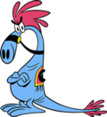
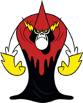
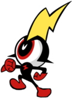

De: La Frikipedia, la enciclopedia extremadamente seria.
De: La Frikipedia, la enciclopedia extremadamente seria. De: La Frikipedia, la enciclopedia extremadamente seria.
«Ayudar es un placer»
~ Wander despues de ayudarle a una chica a quitarle la virginidad
«Odion campeon de los villanos»
~ los vichos ciclopes diciendo eso por obligacion
Galaxia wander y en ingles Wander Over Yonder es una serie para optimistas tiene su caballita para disfrutar con ella en la cama tiene un archienemigo mas tonto que el mismo Wander un ciclope lider de otros ciclopes y unos planetas mas raros que IP anónima
Un día se conocieron Wander y Silvia en clases, silvia le preguntó si quería follar Silvia hablo con Wander y se conocieron mejor, decidieron un día volar con burbujugo (es una burbuja espacial de nave muy cómico) a partir de ahí deciden viajar por toda la galaxia
Era un día muy serio muy serio...(al comienzo del primer episodo) después de unos segundos la serie se volvio 200% optimista, Wander reto a Odión a juegos de feria, Wander ganó en todos, después Odión se encabronó y agarró su nave espacial a matar, Don odion ganó ese juego de feria (casi le vale la vida para ganar en este juego)
Don Odión también tiene otros enemigos que molestan con su plan de conquistar la galaxia, (ni siquiera puede derrotar a un flacucho naranja) su otro enemigo es Capitán Asombroso (no es nada asombroso) ese chico el Capitán Asombroso es un tiburón gay la prpimera que se ve a este tonto es en el episodio basado en dragon ball de un vicho que salia cada 1.000.000 años en ese pisodio wander siguio actuando de manera optimista optimista full 200%
Wander: es el más optimista de la galaxia, le gusta ayudar a la gente, es decir siempre anda por ahí follando ayudando a la gente a hacer cosas y a veces va a la nave de Odión.
 Silvia: es la amiga de Wander a veces se acuestan en la cama, ella es muy fuerte es capaz de romperle un ojo a unos de esos ciclopes con un puño ella sabe solo de fuerza bruta, además corre muy rapido para ser un caballo
 Don odión: es el villano más malvado del universo ganó los amargado Awards en el primer lugar, tiene un esclavo sexual ciclope especial llamado Pepers es un ciclope con un rayo un poquito mas grande que el de otros ciclopes en el casco, este esqueleto lanza rayos laser de las manos de color verde
 Pepers: es el sirviente de Odión comanda la tropa de ciclopes subnormales, tiene una pistola laser para matar a Wander y Silvia, (pero ni siquiera les puede poner un dedo encima) es un perdedor
Mira te dejo detalles.
Y muuuucho más
Este tiburón apareció por primera vez en el picnic donde apareció el hermano de Shenlong que regresaba por 1.000 años, después de que los planetas de la galaxia se alinearan (clara referencia a las tortugas ninja en la pelicula en la que secuestraron a leonardo) ese tiburón planeaba cumplir su deseo pero Don Odión le metió un fatality y lo sacó del planeta casi al final del episodio.
Su segunda aparición fue cuando estaban en una conferencia de una vieja que le daría sus poderes al villano elegido (quien de esos podria ser?, ninguno sabe hacer maldades) el tiburón quería tirarse a Silvia, (la que es la caballo de wander) desde ese episodio nunca se supo más de él... por ahora.
Autor(es):